Елементи фізики плазми
2 Колективні коливання та хвилі в плазмі
Дебаївська довжина \(\lambda _D\) задає просторовий масштаб колективної відповіді плазми, а плазмова частота \(\omega _p\) — часовий (§ 1.4). Тут розглянемо колективні збурення, що змінюються і в просторі, і в часі: на масштабах \(L\gg \lambda _D\) для них можна вводити гладкі макроскопічні поля та густини. При цьому з’являються два різні класи хвиль: поперечні електромагнітні хвилі та поздовжні електростатичні плазмові хвилі. Їх об’єднує спільне джерело — колективний рух заряджених частинок, але фізика поширення в них різна. Обидва класи можна збудити ззовні (антена, пучок, хвиля), але вони виникають і самі, з теплових флуктуацій, як тихий шум (див. кінець розд. 2.3).
§ 2.1 Діелектрична проникність холодної плазми
Нехай на плазму падає електромагнітна хвиля з частотою \(\omega \) (рис. 2.1). Знайдемо відповідь плазми на змінне поле. Зробимо чотири припущення, які в типових умовах виконуються.
-
1. Рухаються переважно електрони. Маса іона не менша за \(1836\,m_e\), тому струм іонів малий порівняно зі струмом електронів (внесок іонів пропорційний \(m_e/m_i\)).
-
2. Швидкість електронів мала, \(v\ll c\), тому силою Лоренца від магнітного поля хвилі (\(\sim (v/c)eE\)) можна знехтувати.
-
3. На масштабі руху електронів поле можна вважати однорідним. Для теплового руху це означає \(kv_{Te}\ll \omega \): за період коливання електрон проходить відстань \(v_{Te}/\omega \), набагато меншу за довжину хвилі, тож він «бачить» однорідне поле й рухається лише під дією \(\vect E\). Амплітуда вимушеного руху також має бути малою, щоб зберігалася лінеаризація.
-
4. Зіткненнями можна знехтувати на часі одного коливання: \(\nu \ll \omega \).
Плазму, для якої ці припущення виконуються, а отже, тепловим рухом частинок можна знехтувати, називають холодною. Це не про кельвіни, а про порівняння: плазма з \(T\sim 10^6\) К холодна для хвилі, у якої \(kv_{Te}\ll \omega \), бо за період електрон не встигає змістится на помітну частку довжини хвилі (див. також Словник термінів, с. (page for section В)).
Рівняння руху електрона \(m_e\ddot {\vect r}=-e\vect {E}\) має розв’язок
\(\seteqnumber{0}{2.}{0}\)\begin{equation*} \vect r=\frac {e}{m_e\omega ^2}\vect E, \end{equation*}
тобто зміщення збігається за напрямом з полем \(\vect E\). Це означає, що воно перебуває в протифазі до сили \(-e\vect E\), яка діє на електрон (так буває при вимушених коливаннях на частоті, вищій за власну; у вільної частинки власна частота нульова). Електрони плазми подібні до зв’язаних зарядів діелектрика, оскільки вони лише коливаються відносно початкового положення. Зміщення створює ефективний дипольний момент електрона \(\vect p=-e\vect r=-e^2\vect E/(m_e\omega ^2)\), напрямлений проти поля, а вектор поляризації одиниці об’єму плазми
\(\seteqnumber{0}{2.}{0}\)\begin{equation*} \vect P=n_e\vect p=-\frac {n_ee^2}{m_e\omega ^2}\vect E\equiv \chi \vect E. \end{equation*}
Оскільки \(\vect D=\vect E+4\pi \vect P=\varepsilon \vect E\), діелектрична проникність \(\varepsilon =1+4\pi \chi \):
\(\seteqnumber{0}{2.}{0}\)\begin{equation} \label {eq:plasma-permittivity} \tcbhighmath {\varepsilon (\omega )=1-\frac {4\pi n_ee^2}{m_e\omega ^2}=1-\frac {\omega _p^2}{\omega ^2}}. \end{equation}
Той самий результат дає опис через струм. Швидкість електрона \(\vect v=\dot {\vect {r}}=-i\omega \vect r\), густина струму \(\vect j=-n_ee\vect v=i\dfrac {n_ee^2}{m_e\omega }\vect E\equiv \sigma (\omega )\vect E\), тому
\(\seteqnumber{0}{2.}{1}\)\begin{equation} \label {eq:sigma-collisionless} \sigma (\omega )=i\frac {\omega _p^2}{4\pi \omega },\qquad \varepsilon =1+\frac {4\pi i\sigma }{\omega }=1-\frac {\omega _p^2}{\omega ^2}. \end{equation}
Провідність уявна: струм відстає від поля на чверть періоду (дія інерції електронів), тому енергія не поглинається. Формула (2.1) — окремий випадок моделі Лоренца — класичної моделі діелектрика, де кожен електрон пружно прив’язаний до свого атома: \(m_e\ddot {\vect r}=-e\vect E-m_e\omega _0^2\vect r\), а \(\omega _0\) — власна частота такого осцилятора. Та сама підстановка \(\vect r\propto e^{-i\omega t}\) дає \(\varepsilon =1+4\pi n_ee^2/[m_e(\omega _0^2-\omega ^2)]\). У плазмі електрони вільні, повертаючої сили немає, тобто \(\omega _0=0\), і одержуємо (2.1).
Результат якісно відрізняється від електростатики діелектриків: тут \(\varepsilon <1\), а при \(\omega <\omega _p\) взагалі \(\varepsilon <0\). Звернімо увагу ще на одне. Статичне екранування (розд. 1) теж можна записати мовою діелектричної проникності: Фур’є-образ потенціалу (1.9) дорівнює \(\varphi _k=4\pi q/(k^2+\lambda _D^{-2})=4\pi q/(k^2\varepsilon (k))\), де \(\varepsilon (0,k)=1+1/(k\lambda _D)^2\). Це не суперечить (2.1): та формула виведена для \(\omega \gg kv_{Te}\) (допущення 3), а статичне екранування — протилежна границя \(\omega \ll kv_{Te}\), де електрони встигають розподілитися за Больцманом. Тобто статичне поле в плазмі сильно перебудовується через перерозподіл зарядів, а високочастотне поле бачить уже іншу, інерційну відповідь електронів. Це хороший приклад того, що одне й те саме середовище має різну електричну відповідь на різних часових масштабах.
§ 2.2 Закон дисперсії. Частота відсікання
Теоретичні відомості Нагадаємо з електродинаміки
З рівнянь Максвелла \(\nabla \times \vect E=-\frac 1c\partial _t\vect B\), \(\nabla \times \vect B=\frac 1c\partial _t\vect D\) (струми вже враховано в \(\vect D=\varepsilon \vect E\)) маємо
\[\nabla \times \nabla \times \vect E=-\frac 1{c^2}\,\frac {\partial ^2\vect D}{\partial t^2}.\]
Для плоскої хвилі \(\vect E\propto e^{i\vect k\cdot \vect r-i\omega t}\) оператор \(\nabla \to i\vect k\), \(\partial _t\to -i\omega \), тому \(\nabla \times \nabla \times \vect E\to -\vect k\times (\vect k\times \vect E)=k^2\vect E-\vect k(\vect k\cdot \vect E)\), і
\(\seteqnumber{0}{2.}{2}\)\begin{equation} \label {eq:wave-master} \bigl (k^2c^2-\varepsilon \omega ^2\bigr )\vect E=c^2\,\vect k\,(\vect k\cdot \vect E). \end{equation}
Поперечна хвиля (\(\vect k\cdot \vect E=0\)): \(k^2c^2=\varepsilon \omega ^2\). Поздовжня (\(\vect E\parallel \vect k\)): ліва частина стає \(-\varepsilon \omega ^2\vect E\) після скорочення \(k^2c^2\vect E\) з правою, тобто \(\varepsilon \omega ^2\vect E=0\), а отже \(\varepsilon =0\). Обидва типи хвиль — з однієї формули: поперечна гілка — нуль «знаменника» \(k^2c^2-\varepsilon \omega ^2\), поздовжня — \(\varepsilon =0\). Тут гілка — окремий розв’язок дисперсійного рівняння, тобто окрема залежність \(\omega (k)\) зі своєю поляризацією.
Для плоскої поперечної хвилі \(\vect E=\vect E_0\exp (ikx-i\omega t)\) (\(\vect k\cdot \vect E=0\)), отже, \(k^2c^2=\varepsilon \omega ^2\). Підставляючи (2.1), одержуємо закон дисперсії
\(\seteqnumber{0}{2.}{3}\)\begin{equation} \label {eq:plasma-dispersion} \tcbhighmath {\omega ^2=\omega _p^2+c^2k^2} \end{equation}
(рис. 2.2). Множачи на \(\hbar ^2\), бачимо, що це релятивістський зв’язок \(\mathcal E^2=(\hbar \omega _p)^2+(\hbar ck)^2\): у плазмі фотон поводиться як частинка з «масою» \(\hbar \omega _p/c^2\).
Хвилі з \(\omega >\omega _p\) поширюються з довжиною \(\lambda =2\pi c/\sqrt {\omega ^2-\omega _p^2}\), а показник заломлення \(N=\sqrt \varepsilon <1\) (літеру \(n\) лишено для концентрації). Швидкості
\(\seteqnumber{0}{2.}{4}\)\begin{equation*} v_{\mathrm {ф}}=\frac \omega k=\frac c{\sqrt {1-\omega _p^2/\omega ^2}}>c,\qquad v_{\mathrm {гр}}=\frac {d\omega }{dk}=c\sqrt {1-\frac {\omega _p^2}{\omega ^2}}<c,\qquad v_{\mathrm {ф}}v_{\mathrm {гр}}=c^2. \end{equation*}
Фазова швидкість більша за швидкість світла, і це не суперечить теорії відносності, адже переносять енергію й сигнал хвильові пакети з груповою швидкістю \(v_{\mathrm {гр}}<c\).
Хвилі з \(\omega <\omega _p\). Тоді \(k^2=(\omega ^2-\omega _p^2)/c^2<0\). Покладемо \(k=i\kappa \), \(\kappa =\sqrt {\omega _p^2-\omega ^2}/c\):
\(\seteqnumber{0}{2.}{4}\)\begin{equation*} E=E_0\exp (-\kappa x-i\omega t). \end{equation*}
Поле експоненціально спадає в глибину плазми, а середній потік енергії дорівнює нулю (\(\vect E\) і \(\vect B\) зсунуті за фазою на чверть періоду). Глибина проникнення \(\delta =1/\kappa \approx c/\omega _p\) при \(\omega \ll \omega _p\) (безколізійна скін-довжина). Для \(n_e=10^{12}~\mathrm {см}^{-3}\) вона становить \(\approx 0{,}5\) см.
Отже, у цій простій моделі однорідної, немагнітної та беззіткнювальної плазми поперечні електромагнітні хвилі поширюються лише за \(\omega >\omega _p\). Магнітне поле, градієнти густини та зіткнення змінюють цю картину. Частоту \(\omega _p\) називають частотою відсікання (англ. cutoff).
§ 2.3 Поздовжні (ленгмюрівські) хвилі
Те саме рівняння, що дало поперечну гілку, дає й поздовжню (рівняння (2.3)). Запис \(\vect D=\varepsilon \vect E\) і рівняння \(\nabla \cdot \vect D=0\) дають \(\varepsilon \,\vect k\cdot \vect E=0\). Є дві можливості: або \(\vect k\cdot \vect E=0\) (поперечна хвиля, розглянута вище), або \(\varepsilon (\omega )=0\) (поздовжня хвиля, \(\vect E\parallel \vect k\)). З (2.1) умова \(\varepsilon =0\) дає \(\omega =\omega _p\) — це відомі плазмові коливання (§ 1.4). У холодній плазмі їхня частота не залежить від \(k\): кожен електрон повертає лише власне зміщення й сусідів не відчуває. Групова швидкість нульова, і збурення не поширюється.
Ситуація змінюється, якщо врахувати тепловий рух: тиск зв’язує сусідні шари. Розглянемо одновимірні поздовжні хвилі малої амплітуди (\(n_e=n_0+n_1\), \(p=p_0+p_1\), швидкість \(v\), поле \(E\); іони нерухомі). Це гідродинамічний опис: електрони розглядаємо як суцільне середовище з густиною, швидкістю й тиском, не стежачи за окремими частинками (систематично — у розд. 5). Потрібні три рівняння: неперервності (електрони не зникають: густина змінюється лише через дивергенцію потоку), руху електронного «флюїду» (сила поля й градієнт тиску прискорюють одиницю об’єму) та Гаусса (поле створює зайвий електронний заряд):
\(\seteqnumber{0}{2.}{4}\)\begin{equation*} \frac {\partial n_1}{\partial t}+n_0\frac {\partial v}{\partial x}=0,\qquad m_en_0\frac {\partial v}{\partial t}=-en_0E-\frac {\partial p_1}{\partial x},\qquad \frac {\partial E}{\partial x}=-4\pi en_1. \end{equation*}
Стискання відбувається вздовж одного напрямку й швидко: за період електрон не встигає вилетіти з області стискання (\(kv_{Te}\ll \omega \approx \omega _{pe}\); оскільки \(\lambda _{De}=v_{Te}/\omega _{pe}\), це те саме, що \(k\lambda _{De}\ll 1\)), тому воно адіабатичне. Для одного ступеня свободи показник адіабати \(\gamma =(f+2)/f=3\), тобто \(p\propto n^3\), і \(p_1=3T_e\,n_1\). Виключаючи \(v\) і \(E\), одержуємо
\(\seteqnumber{0}{2.}{4}\)\begin{equation} \label {eq:bohm-gross} \frac {\partial ^2n_1}{\partial t^2}=-\omega _{pe}^2n_1+3v_{Te}^2\frac {\partial ^2n_1}{\partial x^2} \quad \Rightarrow \quad \tcbhighmath {\omega ^2=\omega _{pe}^2+3k^2v_{Te}^2}. \end{equation}
Це співвідношення Бома–Гросса. Тепер збурення поширюється з груповою швидкістю \(v_{\mathrm {гр}}=3kv_{Te}^2/\omega \neq 0\). Формула справедлива при \(k\lambda _{De}\ll 1\) (ця умова вже використана вище для адіабатичності): ми описували електрони як суцільне середовище з тиском \(p_1=3T_en_1\) і не враховували, що швидкості окремих електронів різні. Коли \(k\lambda _{De}\) перестає бути малим, таке наближення втрачає точність, і потрібний опис, що враховує розподіл електронів за швидкостями. Зокрема, поблизу резонансу електрони, швидкість яких близька до фазової швидкості хвилі, можуть забирати енергію хвилі навіть за відсутності зіткнень (загасання Ландау, 1946 р.; детально — у розд. 7.9). Сила цього ефекту залежить від форми розподілу та параметра \(k\lambda _{De}\); це не просто поріг, після якого будь-яка хвиля миттєво згасає. Цей ефект неможливо одержати, описуючи електрони як суцільне середовище з тиском: він пов’язаний саме з розподілом електронів за швидкостями. Образ серфінгіста: електрони, трохи повільніші за хвилю, вона підганяє, і вони забирають енергію; трохи швидші — гальмуються й віддають її. У максвеллівському розподілі повільних електронів більше, тому хвиля загасає (резонанс \(v_\phi =\omega /k\sim v_{Te}\) настає при \(k\lambda _{De}\sim 1\), коли умова \(kv_{Te}\ll \omega \) порушується).
Ці хвилі не обов’язково приходять ззовні. Навіть у плазмі, залишеній саму по собі, густина заряду в кожну мить випадково відхиляється від середнього, бо частинки хаотично переміщуються. Довільне таке відхилення можна розкласти на гармоніки (ряд Фур’є на відрізку довжини \(L\)):
\(\seteqnumber{0}{2.}{5}\)\begin{equation*} n_1(x,t)=\sum _k n_k(t)\,e^{ikx},\qquad k=\frac {2\pi m}{L},\quad m=0,\pm 1,\pm 2,\dots , \end{equation*}
де \(n_k=L^{-1}\!\int n_1e^{-ikx}\,dx\) — внесок синусоїдної складки густини з періодом \(\lambda =2\pi /k\). Рівняння (2.5) лінійне, тому гармоніки не впливають одна на одну, і кожна коливається зі своєю частотою \(\omega (k)\). Довгохвильові складки (\(k\lambda _{De}\ll 1\)) коливаються на частоті, близькій до \(\omega _{pe}\); у коротких (\(k\lambda _{De}\gtrsim 1\)) електрони розлітаються швидше, ніж поле встигає їх повернути, і колективного коливання нема. Випадковими є лише початкові значення \(n_k\) та поштовхи від теплового руху, а не закон \(\omega (k)\). Так виникає тихе «дрижання» рівноважної плазми на власних частотах. Приклад такого розкладу — на рис. 2.3: випадкова карта густини заряду в площині й її складові різного масштабу, як карту реліктового випромінювання розкладають на мультиполі.
Це дрижання не є однією лінією на \(\omega _{pe}\): частота гармоніки залежить від \(k\) (формула Бома–Гросса), а загасання Ландау (розд. 7.9) надає кожному піку скінченну ширину, тож спектр розмитий; у холодній плазмі не було б ні дрижання, ні розмиття. Тепловий рух ці коливання збуджує, а загасання гасить, і вони врівноважують одне одного: рівень шуму стаціонарний, хвилі не наростають (наростання з того самого шуму можливе лише в нерівноважній плазмі, розд. 8.11). Дрижить і електромагнітне поле: випадкові струми електронів збуджують поперечні хвилі, які майже не загасають, бо їхня фазова швидкість перевищує \(c\); це і є теплове випромінювання плазми. Його, як і розсіяння на флуктуаціях густини, використовують для діагностики (розд. 3.8 і 7.11).

§ 2.4 Зіткнення й поглинання електромагнітних хвиль
Досі зіткненнями ми нехтували. Врахуємо їх у найпростішій формі (частоту \(\nu \equiv \nu _{ei}\) обчислимо в розд. 4; тут вона — просто параметр): електрон гальмується силою тертя \(-m_e\nu \vect v\), де \(\nu \) — ефективна частота зіткнень з іонами та нейтральними атомами. Рівняння руху в полі \(\vect E\,e^{-i\omega t}\)
\(\seteqnumber{0}{2.}{5}\)\begin{equation*} m_e\dot {\vect v}=-e\vect E-m_e\nu \vect v \quad \Rightarrow \quad \vect v=\frac {-ie\vect E}{m_e(\omega +i\nu )}, \end{equation*}
звідки провідність \(\sigma (\omega )=ie^2n_e/[m_e(\omega +i\nu )]\) і діелектрична проникність
\(\seteqnumber{0}{2.}{5}\)\begin{equation} \label {eq:eps-collisions-waves} \varepsilon (\omega )=1+\frac {4\pi i\sigma }{\omega }=1-\frac {\omega _p^2}{\omega (\omega +i\nu )}. \end{equation}
Тепер \(\varepsilon \) комплексна, отже, і хвильове число \(k=(\omega /c)\sqrt \varepsilon \) має уявну частину: хвиля поглинається. Є дві граничні ситуації.
-
• \(\omega \gg \nu \) (високочастотна границя). Тоді \(\operatorname {Im}\varepsilon \approx \omega _p^2\nu /\omega ^3\), і амплітуда спадає як \(e^{-\operatorname {Im}k\,x}\) з
\(\seteqnumber{0}{2.}{6}\)\begin{equation*} \operatorname {Im}k\approx \frac {\nu }{2c}\,\frac {\omega _p^2/\omega ^2}{\sqrt {1-\omega _p^2/\omega ^2}}. \end{equation*}
Поглинання пропорційне \(\nu \) і різко зростає поблизу відсікання \(\omega \to \omega _p\) (формула годиться, поки \(\operatorname {Im}\varepsilon \ll \operatorname {Re}\varepsilon \); там \(v_{\mathrm {гр}}\to 0\): хвиля повільна й довше взаємодіє з електронами). Фізично: коливний рух електрона тим сильніше переходить у тепло, чим частіше він зіштовхується (доки \(\nu \ll \omega \); при \(\nu \gtrsim \omega \) часті зіткнення не дають електрону розігнатися, і поглинання з ростом \(\nu \) падає — максимум при \(\nu \sim \omega \)). Цей механізм поглинає радіохвилі в шарі D іоносфери.
-
• \(\omega \ll \nu \) (низькочастотна границя). Електрони рухаються як у постійному полі: \(\sigma \to \sigma _0=\omega _p^2/4\pi \nu \), плазма поводиться як звичайний провідник з товщиною скін-шару \(\delta =c/\sqrt {2\pi \sigma _0\omega }\). Оскільки \(\nu \propto T^{-3/2}\), провідність \(\sigma _0\propto T^{3/2}\) зростає з нагріванням плазми, а скін-шар, навпаки, стає тоншим: \(\delta \propto \sigma _0^{-1/2}\propto T^{-3/4}\).
Отже, чи є плазма поглинальною, вирішує порівняння \(\omega \) з \(\nu \), а чи відбивальною — порівняння \(\omega \) з \(\omega _p\). Джоулеве тепло \(\langle \vect j\cdot \vect E\rangle =\operatorname {Re}\sigma \,|E|^2/2\) використовують для нагрівання плазми НВЧ-полем.
§ 2.5 Відбиття електромагнітних хвиль від плазми
Чому \(\varepsilon <0\) означає відбиття? При \(\omega <\omega _p\) електрони встигають зміститися й екранувати зовнішнє поле швидше, ніж воно змінює знак. Струм електронів випромінює хвилю, яка гасить падаючу всередині плазми й утворює відбиту назовні — так само поводиться метал (провідник — «дзеркало» до \(\omega _p\)). При \(\omega >\omega _p\) інерція електронів не дає їм встигнути, і хвиля проходить. Аналогія з механікою: осцилятор, який збуджують нижче резонансу, рухається у фазі з силою, а вище резонансу — у протифазі; для вільних електронів «резонанс» стоїть на нулі, тож відгук завжди в протифазі, а \(\omega _p\) лише визначає, чи перевищує поляризація за величиною саме поле (\(-4\pi \chi >1\)), тобто чи \(\varepsilon <0\).
Нехай на межу плазми (\(x>0\)) нормально падає хвиля з вакууму. Амплітудний коефіцієнт відбиття (формули Френеля, \(\mu =1\))
\(\seteqnumber{0}{2.}{6}\)\begin{equation*} r=\frac {1-\sqrt \varepsilon }{1+\sqrt \varepsilon }. \end{equation*}
При \(\omega <\omega _p\) величина \(\sqrt \varepsilon =i\kappa \) чисто уявна, тому
\(\seteqnumber{0}{2.}{6}\)\begin{equation*} R=|r|^2=\left |\frac {1-i\kappa }{1+i\kappa }\right |^2=1. \end{equation*}
При \(\omega \gg \omega _p\) показник заломлення наближається до одиниці, \(N\to 1\), а коефіцієнт відбиття прямує до нуля, \(R\to 0\). Плазма стає прозорою для електромагнітного випромінювання.
Саме тому високочастотне випромінювання, для якого \(\omega \gg \omega _p\), може проходити крізь плазму; до такого діапазону, зокрема, належить рентгенівське випромінювання для багатьох плазмових середовищ.
Похиле падіння
При \(\omega >\omega _p\) плазма — середовище з дійсним показником заломлення \(N=\sqrt \varepsilon <1\), тобто вакуум для хвилі оптично густіший. Тому можливе повне внутрішнє відбиття при \(\sin \theta \geq N\). Критичний кут \(\sin \theta _{\mathrm {кр}}=\sqrt {1-\omega _p^2/\omega ^2}\) прямує до нуля при \(\omega \to \omega _p+0\), і плазма відбиває при будь-якому куті падіння.
Плавна межа
Реальні плазми (іоносфера) мають концентрацію, що повільно зростає з глибиною: \(n_e=n_e(x)\) на відстанях порядку довжини хвилі змінюється слабко. Тому можна використати локальне значення хвильового числа
\(\seteqnumber{0}{2.}{6}\)\begin{equation*} k^2(x)=\frac 1{c^2}\left [\omega ^2-\frac {4\pi e^2}{m_e}n_e(x)\right ]. \end{equation*}
При нормальному падінні \(k(x)\) перетворюється на нуль, де концентрація досягає критичного значення
\(\seteqnumber{0}{2.}{6}\)\begin{equation} \label {eq:critical-density} n_{\mathrm {кр}}=\frac {m_e\omega ^2}{4\pi e^2}\approx 1{,}24\times 10^{4}\,f^2[\mathrm {МГц}]~\mathrm {см}^{-3},\qquad f=\frac \omega {2\pi }. \end{equation}
У цій точці («плазмове дзеркало») хвиля повертається назад. Строго кажучи, наближення локального \(k(x)\) у самій точці повороту непридатне (потрібне розв’язання рівняння Ейрі), але положення точки воно визначає правильно.
При похилому падінні під кутом \(\theta _0\) з вакууму в шарувате середовище зберігається тангенційна складова хвильового вектора, тобто закон Снелліуса \(\sqrt {\varepsilon (x)}\sin \theta (x)=\sin \theta _0\). Поворот відбувається там, де \(\theta =90^\circ \):
\(\seteqnumber{0}{2.}{7}\)\begin{equation*} \varepsilon (x_t)=\sin ^2\theta _0\quad \Rightarrow \quad n_e(x_t)=n_{\mathrm {кр}}\cos ^2\theta _0. \end{equation*}
Тому хвилю, що падає похило, плазма відбиває за меншої концентрації: максимальна частота, яку може відбити шар з максимальною концентрацією \(n_{\max }\), дорівнює \(f_{\max }=f_p(n_{\max })/\cos \theta _0\) («закон секанса»).
§ 2.6 Іоносфера і далекий радіозв’язок
Іоносфера — шар верхньої атмосфери (від висоти \(\sim 60\) км), у якому газ іонізований ультрафіолетовим і рентгенівським випромінюванням Сонця та космічними променями. Ступінь іонізації невелика, але концентрація електронів (від \(\sim 10^{4}\) \(\mathrm {см}^{-3}\) в нижніх областях до \(\sim 10^{6}~\mathrm {см}^{-3}\) у максимумі шару F на висотах \(200\)–\(400\) км вдень) достатня для відбиття радіохвиль. Для \(n_e=10^{6}~\mathrm {см}^{-3}\) частота \(f_p\approx 9\) МГц, тобто короткі хвилі (декаметрові) відбиваються, а ультракороткі й мікрохвилі проходять крізь іоносферу — тому ними користуються для зв’язку з космічними апаратами.
Відбиття від іоносфери дозволяє приймати радіосигнали за горизонтом (рис. 2.4). Довгі та середні хвилі поводяться інакше: вдень їх поглинає нижній шар D через часті зіткнення електронів з нейтральними молекулами (розд. 4), а вночі шар D зникає, і сигнали відбиваються від вищих шарів. Звідси відомий факт: вночі середньохвильові радіостанції чути значно далі.
Той самий ефект проявляється в інших ситуаціях. Під час входу космічного апарата в атмосферу навколо нього утворюється плазмова оболонка з концентрацією \(n_e\gtrsim 10^{11}~\mathrm {см}^{-3}\), що за формулою (2.7) відсікає радіозв’язок на частотах нижче кількох гігагерц («радіозатемнення»). Метали мають вільні електрони з \(n_e\sim 10^{23}~\mathrm {см}^{-3}\) і \(\hbar \omega _p\sim 10\) еВ (ультрафіолет): вони відбивають видиме світло за тим самим механізмом, що й плазма радіохвилі, а в ультрафіолеті для багатьох металів (наприклад, лужних) стають прозорими.
§ 2.7 Як це вимірюють: інтерферометрія і рефлектометрія
Закон дисперсії \(\omega ^2=\omega _p^2+k^2c^2\) пов’язує поширення хвилі з концентрацією електронів, тому електромагнітна хвиля сама є зондом густини плазми. Можливі два режими. Якщо \(\omega \gg \omega _p\), хвиля проходить крізь плазму, але набирає додаткову фазу — на цьому працює інтерферометр. Якщо частота досягає \(\omega _p\), хвиля відбивається від шару відсікання (розд. 2.5) — на цьому працює рефлектометр. Обидва методи не вносять у плазму сторонніх тіл (на відміну від зонда Ленгмюра) і тому придатні для гарячої плазми.
Інтерферометр
Показник заломлення поперечної хвилі \(N=\sqrt \varepsilon =\sqrt {1-n_e/n_{\mathrm {кр}}}\), де критична концентрація \(n_{\mathrm {кр}}(\omega )\) дається формулою (2.7). Для \(n_e\ll n_{\mathrm {кр}}\) маємо \(1-N\approx n_e/2n_{\mathrm {кр}}\), і на хорді крізь плазму хвиля відстає за фазою від хвилі у вакуумі на
\(\seteqnumber{0}{2.}{7}\)\begin{equation} \label {eq:interferometer-phase} \Delta \varphi =\frac \omega c\int (1-N)\,dl\approx \frac {\omega }{2cn_{\mathrm {кр}}}\int n_e\,dl =\tcbhighmath {r_e\lambda \int n_e\,dl}, \end{equation}
де \(r_e=e^2/m_ec^2=2{,}82\times 10^{-13}\) см — класичний радіус електрона. Він з’являється тут природно: \(n_{\mathrm {кр}}=\pi /(r_e\lambda ^2)\), або в практичних одиницях \(n_{\mathrm {кр}}\approx 1{,}1\times 10^{15}/\lambda ^2[\text {мм}]~\text {см}^{-3}\).
Набіг фази вимірюють, порівнюючи хвилю, що пройшла плазму, з опорною хвилею, яка йде в обхід (схема Маха–Цендера, рис. 2.5 а). Під час розряду інтенсивність на детекторі проходить через максимуми й мінімуми; кожна «смуга» відповідає \(\Delta \varphi =2\pi \).
Числова оцінка. Для \(\lambda =2\) мм, хорди \(L=1\) м і \(n_e=10^{13}~\text {см}^{-3}\) маємо \(\Delta \varphi =2{,}82\times 10^{-13}\cdot 0{,}2\cdot 10^{15}\approx 56\) рад, тобто близько 9 смуг. При цьому \(n_{\mathrm {кр}}(2~\text {мм})\approx 2{,}8\times 10^{14}~\text {см}^{-3}\), тож \(n_e/n_{\mathrm {кр}}\approx 0{,}04\), і розклад кореня виправданий.
Межі застосовності інтерферометра
-
• Метод дає не \(n_e\) у точці, а лінійний інтеграл \(\int n_e\,dl\). Щоб відновити профіль \(n_e(r)\), вимірюють уздовж кількох хорд і для осесиметричної плазми виконують обернення Абеля.
-
• Фаза відома з точністю до \(2\pi \): смуги треба відстежувати неперервно протягом усього розряду. Швидка зміна густини або втрата сигналу дає «перескок смуги» — похибку на ціле число \(2\pi \).
-
• Вибір \(\lambda \) — компроміс. Корисний сигнал \(\Delta \varphi \propto \lambda \), а рефракція (відхилення променя градієнтом густини) зростає як \(\lambda ^2\); поблизу \(n_{\mathrm {кр}}\) ще й ламається лінійний зв’язок (2.8). Тому для густої плазми беруть коротші хвилі (субміліметрові й CO\(_2\)-лазери, \(10{,}6\) мкм). Але тоді вібрації дзеркал на \(\delta l\) дають паразитну фазу \(\delta \varphi =2\pi \,\delta l/\lambda \), і її компенсують другим інтерферометром на іншій довжині хвилі, який «бачить» переважно вібрації.
-
• У замагніченій плазмі формула (2.8) лишається точною для звичайної хвилі (O-моди, \(\vect E\parallel \vect B\)), бо її рух уздовж \(\vect B\) не відчуває сили Лоренца (розд. 6.7).
Рефлектометр
Якщо підвищувати частоту зондувальної хвилі, шар відбиття \(x_c(f)\), на якому \(n_e(x_c)=n_{\mathrm {кр}}(f)\), переміщується вглиб плазми (рис. 2.5 б). Вимірюють фазу відбитої хвилі \(\varphi =2(\omega /c)\int _0^{x_c}N\,dx-\pi /2\) (стрибок \(-\pi /2\) дає точка повороту) або, що зручніше, групову затримку
\(\seteqnumber{0}{2.}{8}\)\begin{equation*} \tau (f)=\frac {d\varphi }{d\omega }=\frac 2c\int _0^{x_c}\frac {dx}{N(x)}. \end{equation*}
Тут використано \(d(\omega N)/d\omega =1/N\) (доданок від залежності межі \(x_c(\omega )\) зникає, бо \(N(x_c)=0\)), тобто хвильовий пакет рухається з груповою швидкістю \(v_g=cN\) і сповільнюється біля шару відбиття. Знаючи \(\tau (f)\) на всьому діапазоні частот від нуля до \(F\), положення шару відновлюють оберненням Абеля:
\(\seteqnumber{0}{2.}{8}\)\begin{equation*} \tcbhighmath {x_c(F)=\frac c\pi \int _0^F\frac {\tau (f)\,df}{\sqrt {F^2-f^2}}}. \end{equation*}
Перевірка: для металевої стінки на відстані \(d\) маємо \(\tau =2d/c\) при всіх \(f\), і формула дає \(x_c=d\).
Це той самий принцип, за яким працює іоносонда (розд. 2.6): вертикальний імпульс у діапазоні \(1\)–\(20\) МГц, а результат — іонограма, залежність «віртуальної висоти» \(h'=c\tau /2\) від частоти. Оскільки \(N<1\), віртуальна висота завжди більша за справжню висоту відбиття. У токамаках рефлектометри працюють у діапазоні десятків гігагерц і зондують край плазми.
Межі застосовності рефлектометра:
-
• профіль має бути монотонним: шар за максимумом густини недосяжний, і область за ним метод не бачить;
-
• обернення потребує \(\tau (f)\) від найнижчих частот, тобто профілю на самому краї, який часто доводиться екстраполювати;
-
• флуктуації густини розсіюють хвилю біля шару відбиття. Для вимірювання профілю це завада, але її ж використовують, щоб вимірювати турбулентність;
-
• для незвичайної хвилі (X-моди, \(\vect E\perp \vect B\)) частота відсікання залежить ще й від \(B\) (розд. 6.7); це ускладнює обробку, зате дозволяє зондувати плазму з боку малої густини.
Отже, обидва методи ґрунтуються на одній формулі \(\varepsilon =1-\omega _p^2/\omega ^2\): інтерферометр працює далеко від відсікання і вимірює інтеграл густини, рефлектометр працює саме на відсіканні і вимірює положення шарів однакової густини.
Інтерактивна симуляція. Обидва методи можна випробувати у віртуальній лабораторній: підібрати довжину хвилі, побачити перескок смуги та вплив вібрацій, зняти \(\tau (f)\) і відновити профіль густини невідомої плазми.
Головне в розділі
-
• Плазмова частота \(\omega _p\) — частота власних коливань електронів відносно іонів; вона задає часовий масштаб колективного відгуку.
-
• Діелектрична проникність холодної плазми \(\varepsilon =1-\omega _p^2/\omega ^2\); поперечні хвилі поширюються лише за \(\omega >\omega _p\).
-
• При \(\omega <\omega _p\) хвиля відбивається: так працюють іоносфера й далекий радіозв’язок.
-
• Поздовжні ленгмюрівські хвилі мають тепловий поправковий член у законі дисперсії; зіткнення призводять до поглинання хвиль.
-
• Інтерферометр (\(\omega \gg \omega _p\)) вимірює \(\int n_e\,dl\) через набіг фази; рефлектометр використовує відсікання й за груповою затримкою відновлює профіль \(n_e(x)\).
Задачі
-
2.1. ★★☆ Для електронної плазми з температурою \(T_e\) оцініть поправку \(3k^2v_{Te}^2\) до квадрата ленгмюрівської частоти. За яких умов ця поправка мала порівняно з \(\omega _{pe}^2\)? [відповідь]
-
2.2. ★☆☆ Радіохвиля частоти 1 МГц падає на область плазми з концентрацією \(n_e=10^6~\mathrm {см}^{-3}\). Чи проникне хвиля в плазму? Оцініть глибину проникнення. [відповідь]
-
2.3. ★★☆ Максимальна концентрація шару F дорівнює \(10^6~\mathrm {см}^{-3}\). Яку максимальну частоту хвилі може відбити іоносфера при кутах падіння \(0^\circ \) і \(70^\circ \)? Чому сигнал 100 МГц практично не відбивається? [відповідь]
-
2.4. ★☆☆ Чи може у вакуумі існувати хвиля \(\vect E=\vect e_xE_0e^{i(kx-\omega t)}\)? Чому? А в плазмі? [відповідь]
-
2.5. ★☆☆ Радіохвилі з частотою нижче \(400\) МГц не проходять крізь шар плазми. Знайдіть його концентрацію. [відповідь]
-
2.6. ★★☆ Показник заломлення іоносфери для хвилі 10 МГц дорівнює \(N=0{,}90\). Знайдіть \(n_e\), а також фазову й групову швидкості; перевірте, що \(v_{\phi }v_{g}=c^2\). [відповідь]
-
2.7. ★☆☆ Мікрохвильовий інтерферометр працює на довжині хвилі \(\lambda =2\) мм; хорда в плазмі \(L=1\) м, \(n=10^{13}~\text {см}^{-3}\). Використайте \(\Delta \varphi =r_e\lambda \int n\,dl\) (\(r_e=2{,}8\times 10^{-13}\) см) і знайдіть набіг фази в радіанах і в інтерференційних смугах. Перевірте, що \(\omega \gg \omega _p\). [відповідь]
-
2.8. ★★☆ Для токамака з \(n_e=10^{14}~\text {см}^{-3}\) і хордою \(L=1\) м порівняйте два інтерферометри: \(\lambda =1\) мм і \(\lambda =10{,}6\) мкм (CO\(_2\)-лазер). Для кожного знайдіть \(n_{\mathrm {кр}}\), набіг фази \(\Delta \varphi \) і паразитну фазу від вібрації дзеркал з амплітудою \(\delta l=10\) мкм. Який із них потребує компенсації вібрацій? [відповідь]
-
2.9. ★★★ Концентрація лінійно зростає від краю плазми: \(n_e=n_0x/a\). Покажіть, що групова затримка хвилі, яка відбивається від шару \(x_c\), дорівнює \(\tau =4x_c/c\), тобто «віртуальна» глибина вдвічі більша за справжню. Який діапазон концентрацій охоплює рефлектометр із перестроюванням частоти \(20\)–\(75\) ГГц? [відповідь]
Контрольні питання
-
1. Чому плазма відбиває хвилі з \(\omega <\omega _p\) повністю? Що відбувається при \(\omega >\omega _p\)?
-
2. Як пояснити далекий радіозв’язок на коротких хвилях? Чому ультракороткі хвилі проходять крізь іоносферу?
-
3. Чому при поширенні в плазмі з’являється поглинання? Що вирішує: \(\omega \gg \nu \) чи \(\omega \ll \nu \)? Чому поглинання зростає поблизу \(\omega _p\)?
-
4. Поясніть фізичну природу плазмових коливань. Чому частота не залежить від \(k\) у холодній плазмі?
-
5. Як з діелектричної проникності плазми одержати закон дисперсії? Чому \(v_\phi >c\) не порушує теорії відносності?
-
6. Чому метали блищать, а в вакуумному ультрафіолеті стають прозорими?
-
7. Що саме вимірює мікрохвильовий інтерферометр: \(n\) у точці чи \(\int n\,dl\)?
-
8. Чому інтерферометр працює далеко від відсікання, а рефлектометр — саме на ньому?